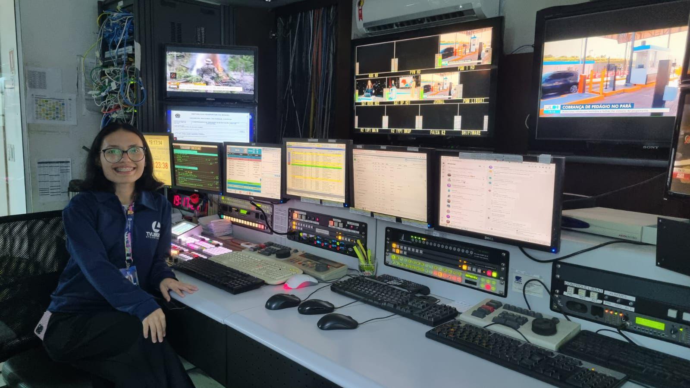

Parque Verde, Belém – PA | Solteira | 24 anos Contato: (91) 8216-4641 | layse2245@gmail.com
Instagram: layse.pimenta
Sobre mim
Olá, seja bem-vindo(a) ao meu site! Meu nome é Layse, tenho 24 anos e estou no 2º semestre de Ciências da Computação na Faculdade Faci Wyden. Atualmente, trabalho como Controladora de Programação na TV Liberal, filial da Rede Globo. Ao longo da minha trajetória na empresa, já passei por outras funções, como Assistente Administrativo, Operadora de Closed Caption e Operadora de Ingest. Me considero uma pessoa proativa e simpática, sempre prezando pela boa comunicação e flexibilidade.
Além da minha profissão, sou apaixonada por tudo que envolve arte. Adoro ler, me encanta tudo relacionado à música, e tenho uma grande paixão por atividades como crochê e colorir.Também gosto muito de cantar e tocar, sempre buscando expressar minha criatividade de diferentes formas.
Formação Academica
Bacharel em Ciências da Computação (em andamento) Matutino Faci Wyden, 2 Semestre.
Experiência Profissional
Controladora de Programação I TV Liberal – Filial da Rede Globo | Junho de 2025 – Presente
Organizar os programas, intervalos comerciais, vinhetas, chamadas e demais conteúdos.
Garantir que os horários planejados sejam respeitados.
Operar Sistema Aveco e em Agosto de 2025 passou a ser utilizado o Sistema Floripa SmartWare, que transmite os programas ao vivo ou gravados.
Acionar no tempo certo a entrada e saída de programas, intervalos e chamadas.
Cronometrar blocos de programas e intervalos.
Ajustar a programação em tempo real para evitar atrasos ou “buracos” na grade.
Trabalhar junto com jornalismo, entretenimento, marketing e comercial para alinhar horários de programas e inserções publicitárias.
Receber orientações da direção de programação sobre mudanças e adequações.
Também, todas as funções de um Operador de Ingest.
Trabalhar junto com jornalismo, entretenimento, marketing e comercial para alinhar horários de programas e inserções publicitárias.
Acompanhar índices de audiência (como Ibope/Kantar) e ajustar chamadas e intervalos de acordo.
Transmissões de grandes eventos como Círio, Jogos, Olimpíadas, Plantão, Eleições, entre outros.

Operadora de Ingest TV Liberal – Filial da Rede Globo | Setembro de 2024 – Maio de 2025 (8 meses)
Operação de sistemas de ingestão e gerenciamento de mídia, incluindo Sis.com e Aspera, com o objetivo de organizar e categorizar conteúdos audiovisuais.
Responsável por realizar o download, organização, e categorização de chamadas, programas e comerciais, garantindo que os materiais estejam prontos para exibição.
Edição e tratamento técnico de áudio, realizando cortes, equalização e ajustes necessários em chamadas e comerciais.
Ingestão de conteúdos locais e da Globo (novelas, documentários, programas) no servidor de exibição Aveco.
Gravação de chamadas locais para programas como Bom Dia Pará, JL1, GE, G1, JL2 e suas respectivas versões: hoje, amanhã e neutra.
Trabalho com programas como É do Pará, Sons do Pará, Círio, RexPa, Liberal Comunidade, entre outros, para garantir que todos os conteúdos estejam prontos para exibição.
Atualização contínua e manutenção do servidor Aveco, excluindo materiais desatualizados e organizando as mídias disponíveis para otimizar o fluxo de trabalho.
Verificação e monitoramento constante da qualidade técnica dos arquivos, incluindo aspectos de áudio, vídeo, sincronização e formatos de exibição.
Apoio técnico à equipe de exibição para resolução de problemas e urgências relacionadas à programação e materiais.
Interface direta com diferentes departamentos, como OPEC, Jornalismo (G1 Pará, GE), Marketing, Técnico e Closed Caption, para garantir a conformidade dos conteúdos transmitidos.
Participação em reuniões de alinhamento e repasse de demandas operacionais, assegurando que todos os setores tenham as informações necessárias para um trabalho eficiente.
Produção e envio de relatórios diários e semanais sobre o processo de ingestão, destacando materiais que necessitam de atenção especial ou correções técnicas.
Operadora de Closed Caption TV Liberal – Filial da Rede Globo | Janeiro de 2023 – Agosto de 2024 (1 ano e 7 meses)
Produção e sincronização de closed captions para programas ao vivo e gravados, assegurando a acessibilidade para o público.
Locução e sincronização de legendas em tempo real durante a transmissão ao vivo dos programas Bom Dia Pará, JL1 e JL2.
Criação de legendas para programas fixos, como Liberal Comunidade e É do Pará, além de eventos especiais como o Círio, eleições e outros.
Colaboração estreita com a equipe de ingestão para garantir a correta ingestão de legendas nos sistemas de exibição.
Envio de relatórios operacionais diários e relatórios sobre a produção de legendas, mantendo todos os envolvidos atualizados sobre o andamento das atividades.
Assistente Administrativo (Aprendiz) TV Liberal – Filial da Rede Globo | Outubro de 2021 – Novembro de 2022 (11 meses)
Organização de documentos administrativos e trabalhistas, garantindo a correta arquivação e acesso às informações quando necessário.
Gestão de ponto eletrônico e entrega de holerites aos funcionários, mantendo a documentação em conformidade com as normas trabalhistas.
Apoio na organização de treinamentos e eventos internos, assegurando que todos os colaboradores estivessem atualizados quanto a processos e normas.
Utilização do sistema RM para controle de dados, atualizações de férias e outras informações administrativas.
Cursos e Certificações
Coordenador de Programação - Uniglobo, 2025
Treinamento para o novo centro de exibição com ênfase no sistema Floripa Smartware – TV Liberal, 2024
Canvas do Modelo de Negócios (BMC) – Uniglobo, 2024
O Cérebro na Tomada de Decisão – Uniglobo, 2024
Big Data e Internet das Coisas – Uniglobo, 2024
Inglês Básico e Intermediário – AD Campo do Coqueiro, 2022
Word, Excel, Internet com outlook, Atendente de farmácia, Operador de caixa e Atendimento de Consultório Odontológico – Prepara Cursos, 2021
Oficina de Gestão de Pessoas- Prepara Cursos, 2021
Habilidades e Competências
Gestão de Mídia e Tecnologia: Expertise em sistemas de ingestão e gerenciamento de conteúdo, como Sis.com, Aspera e Aveco.
Edição Técnica de Áudio e Vídeo: Proficiência em edição de áudio e vídeo, garantindo que os materiais atendam aos padrões técnicos e de qualidade da emissora.
Acessibilidade e Closed Caption: Capacidade de gerar e sincronizar closed caption em tempo real, promovendo acessibilidade durante transmissões ao vivo.
Gestão de Arquivos e Dados: Organização e manutenção de arquivos físicos e digitais, incluindo backup e armazenamento em nuvem.
Trabalho em Equipe: Habilidade em colaborar com diferentes departamentos (jornalismo, marketing, técnica) para garantir a entrega eficiente e dentro do prazo de conteúdos.
Resolução de Problemas Técnicos: Capacidade de solucionar problemas de transmissão de forma rápida e eficiente para evitar falhas na programação.